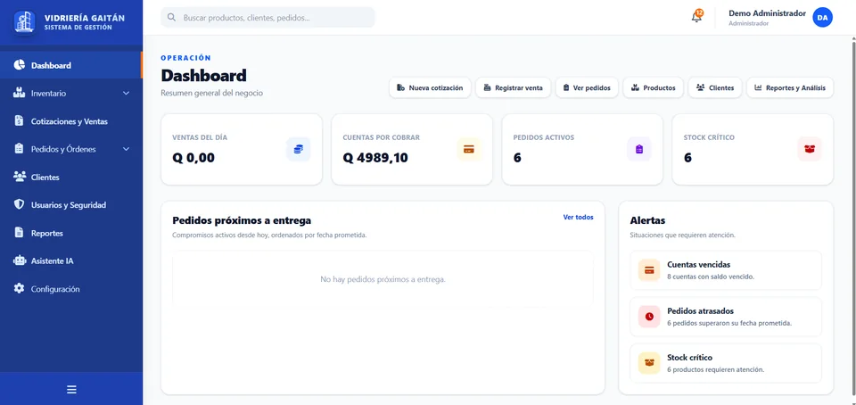
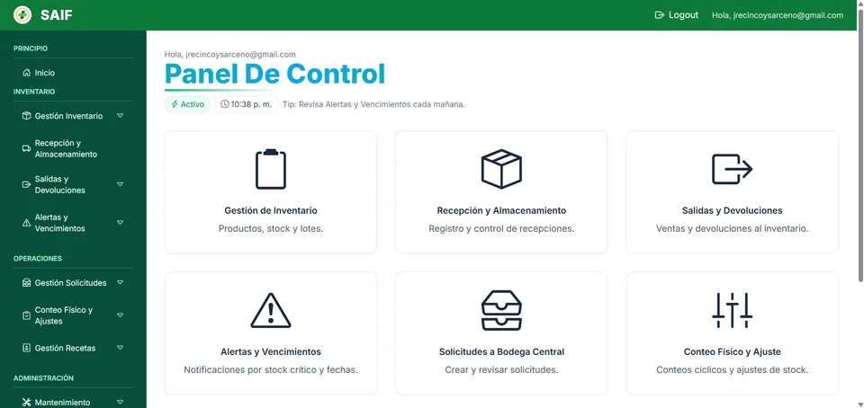

01 SIGV
Sistema Integral de Gestión de Vidriería
Gestión de clientes, materiales, cotizaciones, ventas y pedidos para Vidriería Gaitán.
Python / Django / PostgreSQL
Ver proyecto SIGV
Desarrollador de software junior
Desarrollo aplicaciones web con Python, Django y PostgreSQL. Desarrollé e implementé de forma individual SIGV, un sistema de gestión empresarial, y lideré el desarrollo técnico de SAIF, una solución colaborativa de inventario farmacéutico.
Dos proyectos implementados en sectores distintos: gestión comercial e inventario farmacéutico.
01 SIGV
Gestión de clientes, materiales, cotizaciones, ventas y pedidos para Vidriería Gaitán.
Python / Django / PostgreSQL
Ver proyecto SIGV
02 SAIF
Inventario, recepciones y vencimientos para Farmacias Salud y Ahorro. Lideré el desarrollo técnico dentro de un equipo de cinco integrantes.
Python / Django / PostgreSQL
Ver proyecto SAIF
Cuento con pensum cerrado en Ingeniería en Sistemas de Información y Ciencias de la Computación por la Universidad Mariano Gálvez de Guatemala. Mi experiencia práctica abarca el desarrollo de aplicaciones web, el modelado de bases de datos y el despliegue de soluciones. He trabajado en proyectos individuales y colaborativos, con responsabilidades de liderazgo técnico.